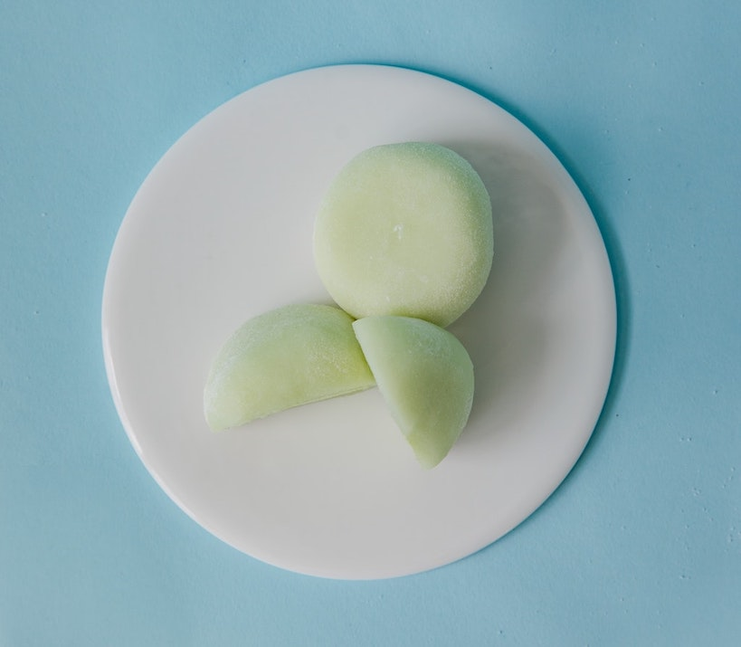

Easy Two-Ingredient Microwave Mochi
Hard to beat a mochi recipe that only needs two ingredients and 5 minutes of effort. Use an ice cream with a bright, punchy flavor or it'll be overpowered by the rice flour. Fruit flavors highly recommended
Ingredients
- 80g ice cream
- 60g glutinous rice flour, plus extra for dusting
You can use practically any amount of ice cream and rice flour as long as they're in a 4:3 ratio by weight.
Instructions
- Microwave the ice cream until completely melted.
- Add the rice flour to the melted ice cream and stir thoroughly to combine.
- Microwave the mochi mixture in three 45 second increments, stirring in between each. If your mochi is looking very solid by the end of the second increment, shorten the third to 20 seconds.
- Turn the mochi out onto a surface lightly dusted with rice flour and let it cool for 5 minutes.
- Shape the mochi however you wish.
Recipe from SenyaiGrubs
